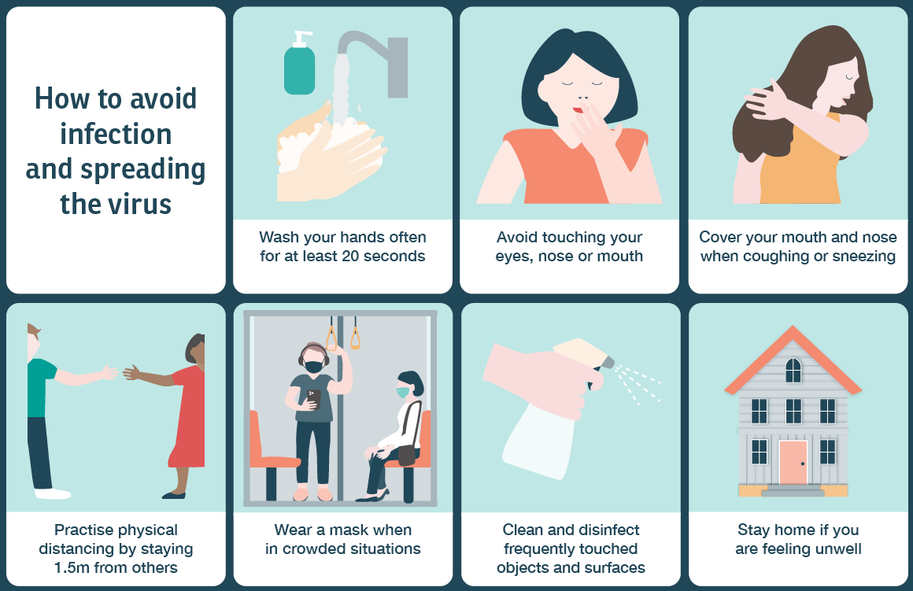
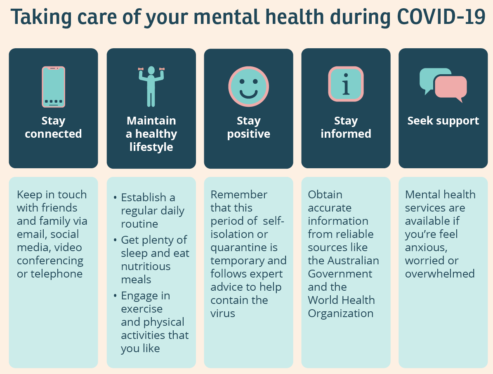
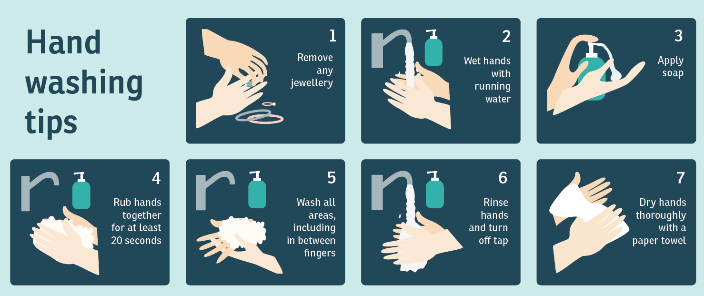

Are You Worried About the COVID Situation? Want to Play Your Part in Deafeating it? Here's the:
Here, you will get much of the COVID related basic information, safety measure, myths and facts, and important links, just at a single click and scroll.
According to the WHO:
Coronavirus disease (COVID-19) is an infectious disease caused by the SARS-CoV-2 virus.
Most people infected with the virus will experience mild to moderate respiratory illness and recover without requiring special treatment. However, some will become seriously ill and require medical attention. Older people and those with underlying medical conditions like cardiovascular disease, diabetes, chronic respiratory disease, or cancer are more likely to develop serious illness. Anyone can get sick with COVID-19 and become seriously ill or die at any age.
Therefore it is very important to protect oneself and loved ones from this deadly disease. And believe me, it's not at all difficult to do this as you think. With just a few steps and precautions, you will be able to increase your chances to live by many times.
As a sidenote please don't follow the pseudo scientific myths from the internet, the likes of which have been busted in the FAQs ssection.


| Symptom | COVID-19 | Colds | Flu | Advice |
|---|---|---|---|---|
| Aches and Pain | Sometimes | Rare | Common | Use Heat packs |
| Cough | Common (usually dry) |
Common | Common (usually dry) |
Take Cough Syrup or Ginger Juice with Honey |
| Fatigue | Sometimes | Sometimes | Common | Rest well or take medicine |
| Fever | Common | Rare | Common | Apply ice packs and take medicine |
| Headache | Sometimes | Common | Common | Rest well and do Anulom-Vilom |
| Shortness of Breath | Sometimes | No | No | Check with an oximater and go to a doctor if oxygen level is low |
Yes, it can prevent you from catching COVID, as you will probably die before you contact COVID. Methanol, ethanol, and bleach are poisons. Drinking them can lead to disability and death. Methanol, ethanol, and bleach are sometimes used in cleaning products to kill the virus on surfaces - however you should never drink them. They will not kill the virus in your body and they will harm your internal organs.
Repeat after me: Viruses are not electromagnetic waves. They cannot be transmitted via radio waves/mobile networks. COVID-19 is spreading in many countries that do not have 5G mobile networks. (Maybe they are waves, but yeah, you should probably read about wave particle duality)
You just need another reason to drink, don't you? Do try Sanitisers (Please Don't).
The prolonged use of medical masks can be uncomfortable. However, it does not lead to CO2 intoxication nor oxygen
deficiency. While wearing a medical mask, make sure it fits properly and that it is tight enough to allow you to
breathe normally.
Fun Fact: If the increased levels of CO2 from the usage of masks scare you, please do not
try to check the air pollution data. Stay safe!
Yes, you should definitely wash your hands during these times with soap. Merely running hands under water won't help you. You should wash your hands for atleast 20 seconds using the method given below:
Alcohol based hand sanitisers are also a good option, but it should contain atleast 60% alcohol. But try to use soap and use sanitisers only if hand washing isn't readily available.
Antibiotics work only against bacteria, not viruses. COVID-19 is caused by a virus, and therefore antibiotics should not be used for prevention or treatment. However, if you are hospitalized for COVID-19, you may receive antibiotics because bacterial co-infection is possible.